Sending and Receiving low level I2C commands.¶
In this tutorial we will walk through an example of communicating with the BMP581, temperature and pressure sensor. Here is a picture of the I2CDriver dongle and the BMP581 breakout board connected together.
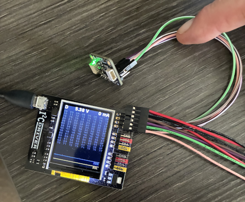
Now lets open I2CC application. It should look like so:
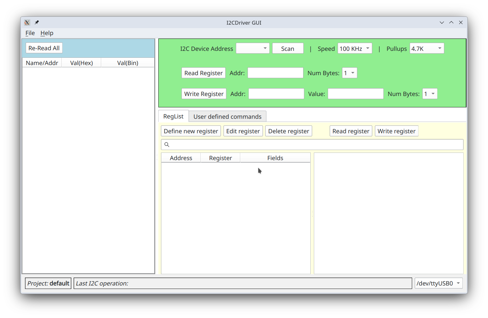
In the lower right corner you can see that I2C dongle is connected on serial port /dev/ttyUSB0. If nothing is shown,
that means that you do not have a dongle connected or recognized by the host computer.
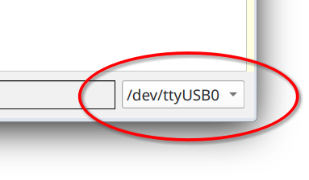
Clicking on Scan button will perform scan for devices on I2C bus at which point they will appear in the dropdown box.
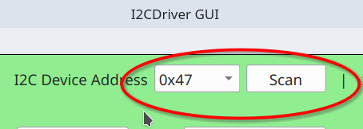
Application always operates within the context of some project. Project default is, well, the default project. It is created the first time you run I2CC, and it cannot be deleted. Other user-defined projects can be deleted at will. Almost everything you see on the screen is automatically saved in the open project, including window geometry, registers read values, custom commands, and so on. Thus, when you close and then reopen the application again you should see almost exactly what you saw when you closed it. A new project can be created by going to menu "File" => "New Project ".
Currently active project is shown in the left lower corner.
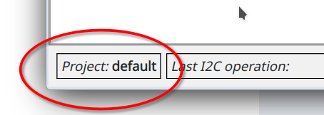
Clock speed by default is 100 KHz, but you can select higher value in Speed drop down box. Note that at higher speeds
you may need to lower value of the pullup resitor.
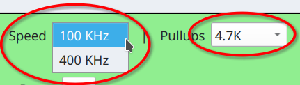
At the device address 0x47 I have
BMP581
temperature and pressure sensor. Register at address 0x01 holds ASIC ID which according to the documentation should be
0b01010000. So, enter 1 into Addr: field and click Read Register or simply press Enter. Note, that values in
Addr: field are always interpreted as hexadecimal. You can also enter them with 0x prefix to make it more explicit.
As a result at the bottom of the window you will see exact bits exchanged in the transaction between master and slave.
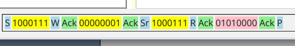
Highlighted in yellow are bits that were sent from master to the slave and in pink from slave to the master. Letters S
and P represent start and stop condition respectively.
Sr is a restart condition. W indicates that we are writing to the slave and
R that we are reading from the slave device. Ack is acknowledgment from either device. Unlikely Nack can also
happen and it will appear in bright red. You can find more about details of how data is transferred on the wire in
"A Basic Guide to I2C", pdf document maintained by Texas Instruments.
Let's parse out this particular transaction. Going from left to right transaction opens with start condition S
followed by a slave device address 1000111, which in hex is 0x47, exactly what you see in the dropdown box for the
"I2C Device Address" after you clicked on the "Scan" button. This address is 7 bits wide, and it is followed by a
bit W indicating that master intends to write something to a slave device. Slave responded with Ack and master then
sends one full byte 00000001. This is the address of the register that we intend to read. Then we see Sr, a restart
condition followed again by a slave device address 1000111, now followed by a read bit
R. Slave responds with Ack and then master releases data line allowing slave to drive it. Master, however, continues
to drive clock line. Slave then responds with 01010000 byte, now that it is driving data line while master is
listening. In turn, master responds with Ack and a stop condition P, at which point it stops driving both the clock
and the data lines. This concludes the transaction.
In the left most panel you will see results of reading that register. Both in hex and binary.
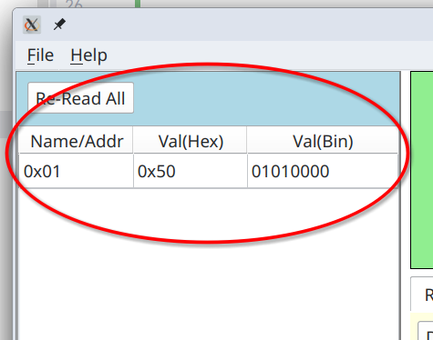
Indeed, you can see that value of this register is 0b01010000 as per the specification for this device.
Register at 0x1, however, is read/only, and so we cannot use it show write operation. Register 0x36 is read/write. It
controls oversampling and selection if we want to measure pressure (temperature measurements are always enabled). To set
overampling rates to x1 for both pressure and temperature and enable pressure measurement we need to write
0b01000000 into this register. To that end we enter 0b01000000 into Value: field and 0x36 into Addr: and press
Write Register button.
Note, that value has to be entered with prefixes ether 0x or 0b for hex or binary formats respectfully.
At the bottom you will see raw bit-by-bit transaction.
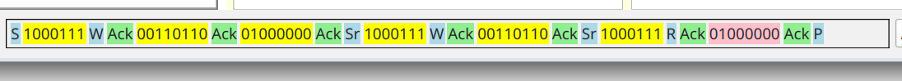
The reason it is so long is that we combine it with read for the same register, which allows us to place register value into results panel.
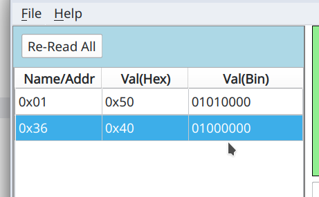
Now that there are more than one register in the results panel it might make sense to be able to re-read all of them by clicking on Re-Read All button. Double-clicking on any row there will also re-read selected register.
Right mouse click will get you context menu.
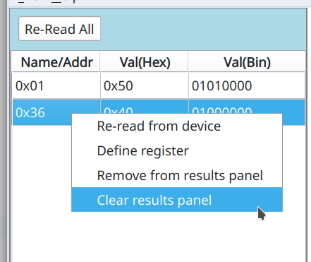
Option "Remove from results panel" will remove selected row and "Clear results panel" will remove all rows. We will come to see what "Define register" do in the next page of this tutorial.
Multibyte registers¶
In BMP581 all registers hold one byte and their addresses fit into one byte. If you request to read two or more bytes
for a given register different things can happen depending on the make and model of the slave device. Sometimes it will
simply return the same byte as many times as you have requested it. In case of BMP581 it will actually return value of
the subsequent registers. For example register 0x02 holds ASIC revision ID which will be 0b00110010. Let's request
to read two bytes for register at address 0x01.
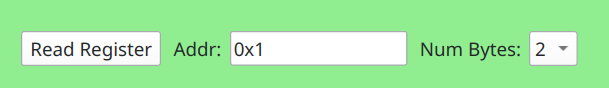
At the bottom of application you will see following transaction log
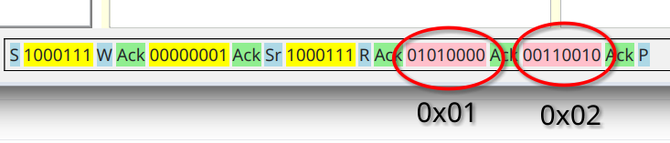
You can see that first returned value is for register at address 0x01 and the second one for register at address 0x02. I2CC, however, is unable to deduce that these bytes correspond to two different registers and since we requested to read two byte register at address 0x01, then that is what it will assume. It is important to note that this behavior is vendor specific. You will need to read documentation for your specific chip to understand what is to be expected here.
Wide register addresses¶
Just as we can read registers that hold multiple bytes, register addresses do not have to be of one byte width. Let say
that device have so many registers that it needs more than one byte to address them, for example two bytes. The way to
trigger that would be to write address in the Addr: input field in hex padding it with zeroes if necessary such that
address value is unambiguously of two or more bytes with. For example, you can enter 0x0001.
Links¶
- A Basic Guide to I2C - I2C application note maintained by Texas Instruments.
- BMP581 - sensor used in the example interaction above.